大盛況のファーマーズマーケット＠City Hall
あるよく晴れた８月のある水曜日、たくさん小銭を用意して向かった先は、大好評開催中のCity Hallのファーマーズマーケット。
市庁舎前の広場に毎週水曜日市場がたっているのだ。
この時期のファーマーズマーケットは楽しい。初夏のころには少なめだった店も収穫の秋をむかえつつあるこの時期、出店する店も増え活気づく
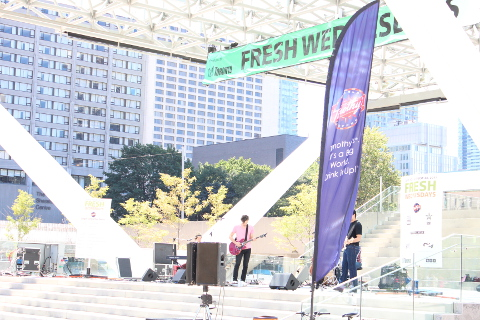
８月中は広場に備え付けのステージにて、午後１２から2時間無料コンサートが開催されている。音楽があると雰囲気が盛り上がリ買い物もなんだかより楽しい。
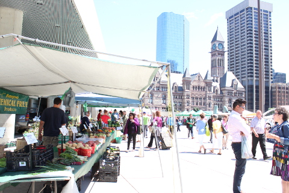
↑ 写真奥の時計台のある建物は旧市庁舎。
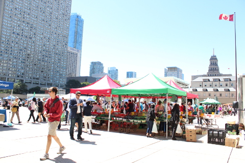
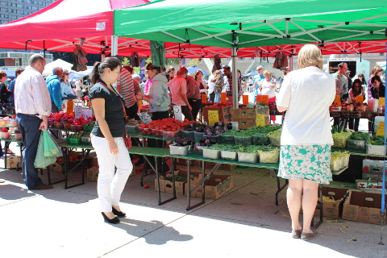
天気も良く、マーケットは大賑わい。

旬の新鮮な野菜や果物が並ぶ。カラフルな野菜や果物はみているだけでも楽しい。
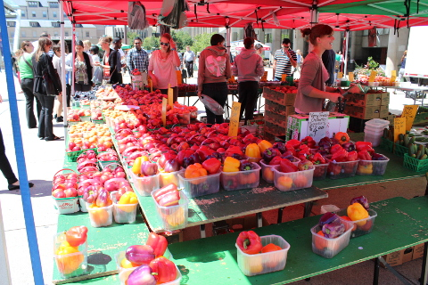
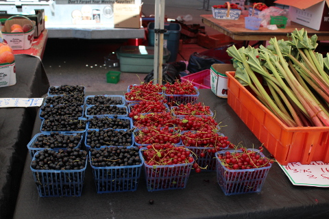
野菜や果物だけでなく、他のもの買える。
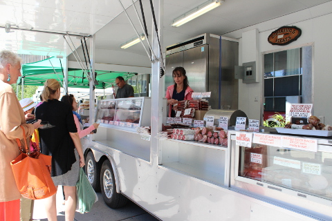
↑ サラミやチョリソｰを売っている。
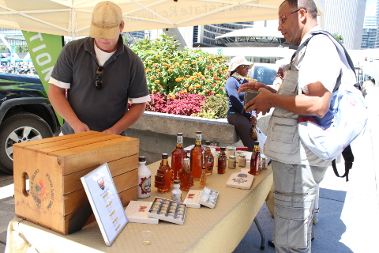
↑ メープルシロップの店。
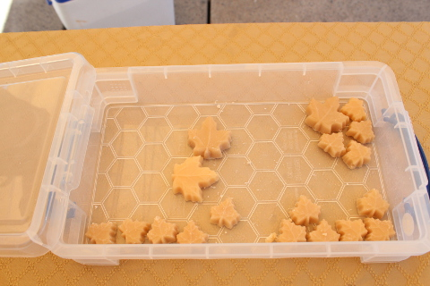
誘惑に負けてメープルキャンディをひとつだけ買った。25セント。口のなかでほろっと溶けていく感じ。とっても甘いけど砂糖よりもやさしい甘さ。
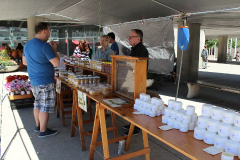
はちみつやさん。はちみつを使ったクリームも売っている。
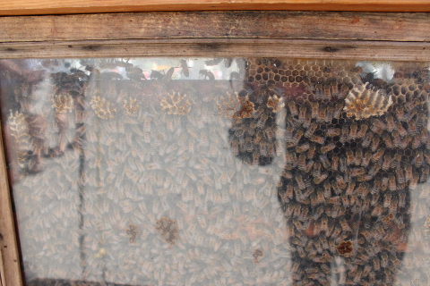
よくみると箱のなかでうごめくものは、生きた蜂。
ここでは、以前から気になっていたこれ↓を購入。
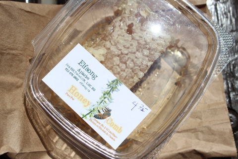
以前着たときに、中国人の当時妊婦だった知り合いが買っていたのだ。なんでも健康にいいそうで。中国人にそういわれると説得力あるんだな。
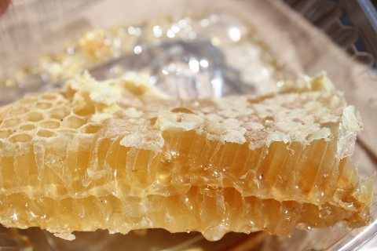
そのまま食べるのだが、お店のひとによると、スライスしてパンにのせて食べてもいいそう。
家に帰って紅茶をいれてさっそくスライスして食べてみた。口のなかにぼそぼそとしたロウの部分が残るものの、これぞまさしくピュア、なはちみつのおいしさが味わえた。とってもおいしかった。